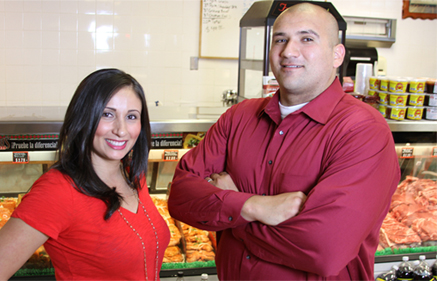

Nosotros
Fundada en 1999 por Luis y María Díaz, Main Market es una carniceria y tienda operada por la familia que ofrece a Bakersfield carne fresca, de alta calidad, y el mejor servicio al cliente en la ciudad.
 Trayendo recuerdos de la clásica carnicería mexicana, Main Market es famosa por su carne asada sazonada al estilo mexicano, pollo sazonado, salsas y guacamole hecho diariamente, carnitas, chicharrones,
birria, menudo, y mucho más.
El servicio es amable, la limpieza y la carne más fresca y de mayor calidad de lugares como el galardonado Harris Ranch, es lo que distingue a Main Market de la competencia. La familia Díaz se asegura de que cada cliente es tratado como si fueran parte de
la familia, y se enorgullecen de que sus clientes vuelvan una y otra vez por la carne de más alta calidad y el mejor servicio al cliente en la ciudad!
Trayendo recuerdos de la clásica carnicería mexicana, Main Market es famosa por su carne asada sazonada al estilo mexicano, pollo sazonado, salsas y guacamole hecho diariamente, carnitas, chicharrones,
birria, menudo, y mucho más.
El servicio es amable, la limpieza y la carne más fresca y de mayor calidad de lugares como el galardonado Harris Ranch, es lo que distingue a Main Market de la competencia. La familia Díaz se asegura de que cada cliente es tratado como si fueran parte de
la familia, y se enorgullecen de que sus clientes vuelvan una y otra vez por la carne de más alta calidad y el mejor servicio al cliente en la ciudad!
Nuestra Historia
La familia Díaz es verdaderamente un ejemplo de una historia de la pobreza a la riqueza. Luis, el menor de 9 hijos, provenía de una familia muy pobre. Fue criado por su madre después de la pérdida de su padre a la tierna edad de seis años. Su madre mostró Luis el verdadero valor del trabajo duro y la perseverancia. Maria también provenía de una familia muy pobre. Ella era el séptimo de 14 hijos. A la temprana edad de catorce años, María se quedó a cuidar a sus siete hermanos menores mientras sus padres llegaron a Estados Unidos en busca de una vida mejor. Las luchas de Luis y Maria en una edad tan joven inculcan buenos hábitos de trabajo y la ambición para mejorar su situación.
En 1999, Main Market nació. En un par de años, Main Market pasó de tener un empleado a tener 25 empleados. Luis y María Díaz siempre han hecho la frescura, la calidad y el servicio al cliente la más alta prioridad. Estos altos estándares de calidad y servicio, junto con el trabajo duro, han sido las claves del éxito y son la razón de la fuerte lealtad entre la Main Market y sus clientes.
Nuestro Futuro
Main Market ha sido siempre un negocio familiar. Y ahora que han envejecido, la próxima generación de la familia Díaz está jugando un papel más importante en las operaciones diarias de la empresa.  Habiendo crecido ayudando a sus padres a hacer su sueño un establecimiento próspero y conociendo bien el negocio de la familia, tienen lo que se necesita para seguir adelante y hacer la tienda más exitosa que nunca. Se comprometen a no perder de vista la ética del trabajo y los altos estándares de frescura, productos de alta calidad y el gran servicio al cliente establecido por sus padres que crearon una base de clientes leales. Y como siempre, la familia Díaz les da la bienvenida a todos para que prueben la diferencia y formen parte de la familia Main Market.